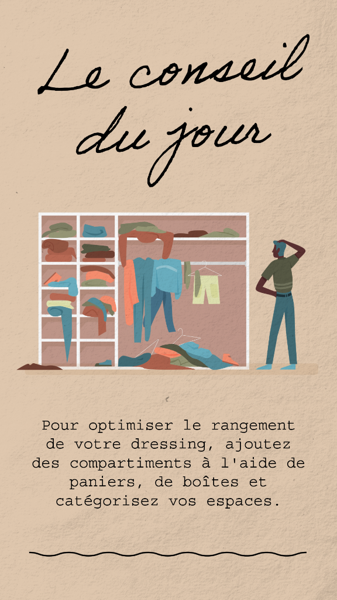
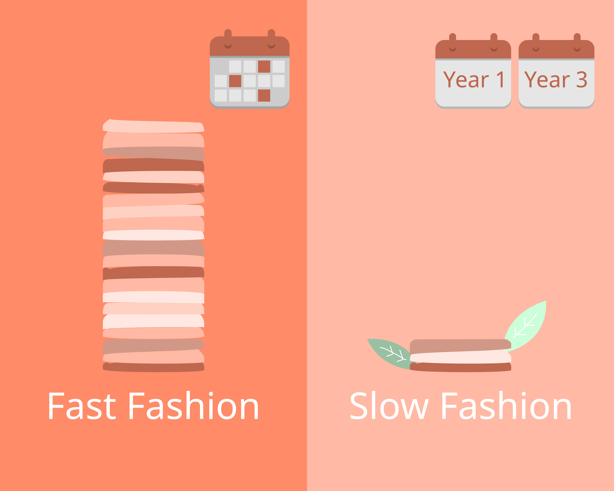

Conseil de style
Un miroir bienveillant.
Pas de leçons, pas de jugement. Ton styliste personnel s'adapte à tes goûts, tes humeurs, ton emploi du temps. Il te rassure avant un rendez-vous, t'aide à oser avant une soirée, et reste discret quand tu sais déjà ce que tu veux.
Ce qu'il fait pour toi
Des conseils précis, jamais des règles.
Chaque matin est différent. La météo, ton humeur, ce qui t'attend dans la journée. Ton styliste prend tout ça en compte avant de proposer.
Il sait que la même chemise peut être parfaite un lundi et complètement inadaptée un vendredi soir. C'est ce sens du contexte qui fait la différence.
- Harmoniser une couleur avec ton teint ou ton humeur.
- Transformer une tenue basique avec un seul détail.
- Préparer une silhouette pour le travail, un dîner, une sortie.
- Identifier la pièce qui manque vraiment dans ton dressing.
- Reconnaître ce qui te va — et te le rappeler les jours où tu doutes.

Humeurs & contextes
Une humeur, un style.
Le matin où tu as besoin de te sentir solide. Le soir où tu veux être lumineuse. Le dimanche où tu veux disparaître dans ton pull. Styleme.fr capte ces moments.
 Sans tracas
Sans tracas
Cool, détendu
 Osez-vous montrer
Osez-vous montrer

Slow fashion
L'inspiration Styleme
Trois affiches. Une saison.
Chaque semaine, l'équipe Styleme.fr partage ses coups de cœur : un conseil pratique, une tendance forte, une question de style. À épingler, à partager, à porter.
Communauté & Tribus
Tes conseils n'arrivent jamais seuls — une tribu les enrichit.
Sur Styleme.fr™, chaque conseil de ton styliste personnel peut s'ouvrir vers une tribu : un cercle de personnes qui partagent ton humeur du jour, ton univers, ta couleur de matin. Tu y trouves des inspirations vraies, des trocs de pièces, des regards qui t'élèvent — jamais des likes vides.
-
Tribus d'humeur
Slow, joyeux, posé, audacieux… Tu rejoins ce qui te ressemble aujourd'hui, pas hier.
-
Troc & échanges
Tu donnes une seconde vie à tes pièces. Tu adoptes celles des autres. Rien ne se jette.
-
Conseils croisés
Ton styliste IA + les regards de la tribu : la vraie sécurité du goût.
À ton tour
Un miroir qui te ressemble.
Active ton accès en avant-première et reçois tes premiers conseils dès l'ouverture.